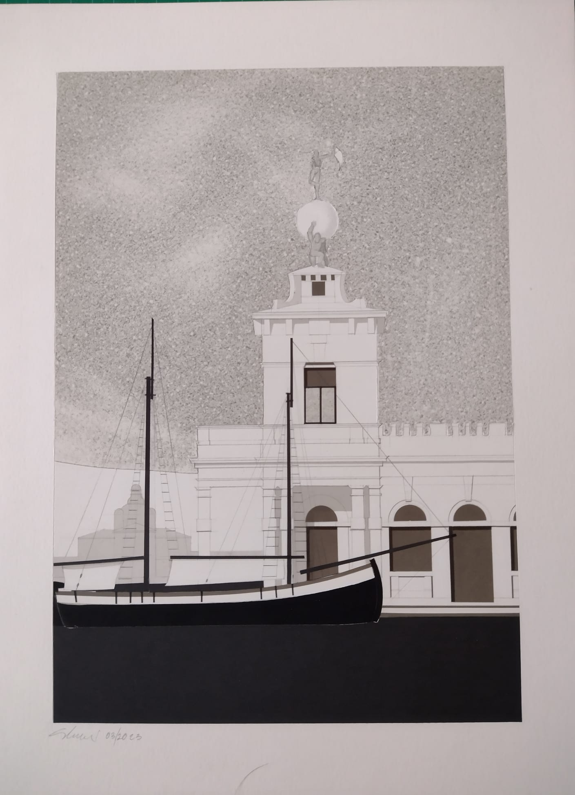
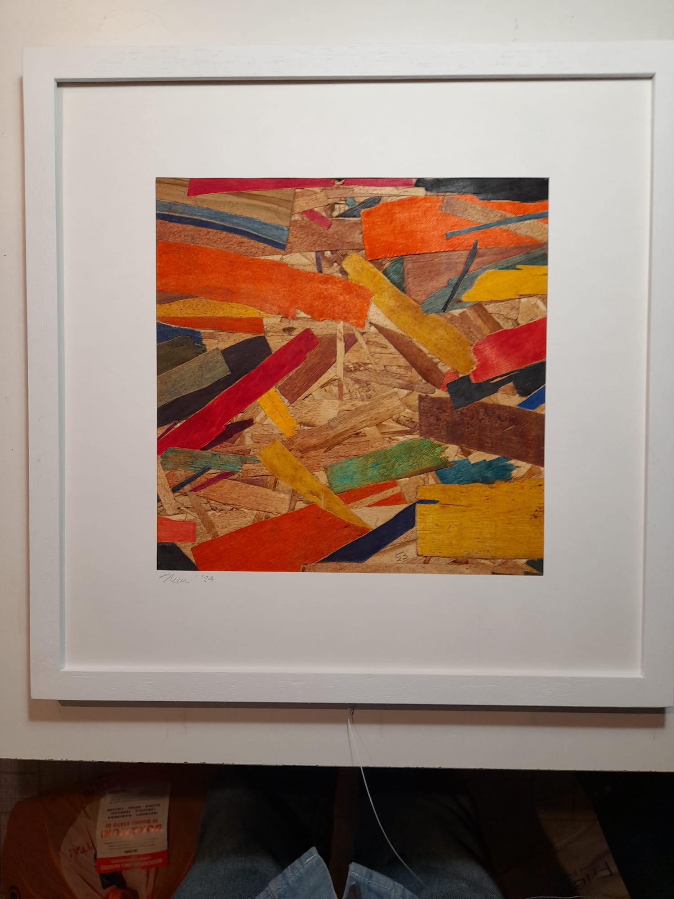
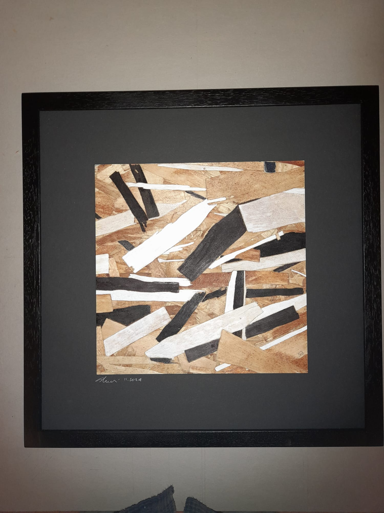
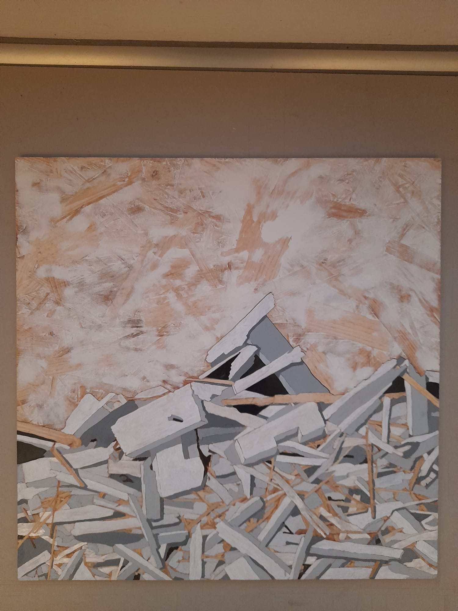

Opere
Una selezione delle opere pittoriche di Stefano Bianchi: dagli acrilici su tela alle tecniche miste su legno, un percorso che esplora il frammento, la luce e la memoria dei luoghi.
Fin dai primi anni Settanta, Stefano Bianchi ha sviluppato un vocabolario visivo fondato sull'idea di frammentazione. Le sue composizioni — realizzate spesso su fondi di legno grezzo o cartone pressato — accumulano schegge di colore, tavole spezzate, superfici consumate che rimandano al tempo e alla perdita.
Non è nostalgia, ma indagine. L'artista lavora per sottrazione quanto per addizione: gratta, copre, rivela strati che il tempo ha depositato. Ogni tela è una stratificazione di decisioni e ripensamenti, un diario visivo che l'osservatore può leggere come una partitura.
La città natale ritorna nelle opere architettoniche: campanili che emergono dal piano pittorico come apparizioni, imbarcazioni che tagliano la composizione con la loro geometria austera. Il segno è preciso, quasi tecnico, ma l'atmosfera è quella della nebbia lagunare, dell'ambiguità tra reale e riflesso.
L'opera Disegno 1 (2023) è un esempio emblematico: la torre di Piazza San Marco emerge da uno sfondo granulare che evoca nebbia e sabbia, mentre la barca in primo piano — silenziosa, immobile — introduce una nota di attesa sospesa nel tempo.

Inchiostro e grafite su carta — la Serenissima come archeologia del presente.

Tecnica mista su legno — schegge cromatiche come spartito visivo del caos ordinato.

Acrilico su legno — il silenzio come materia, il relitto come forma del tempo.

Acrilico su tela — macerie e luce, un grido silenzioso rivolto al mondo.